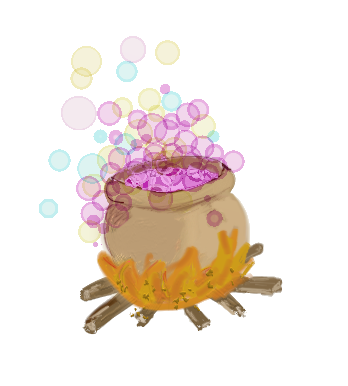

Cliquer ici pour les diapos de cours
Cliquer ici pour les diapos de cours
4.1 Lire une tibble
Dans la suite des exercices concernant la manipulation de tableaux de données nous allons utiliser le tableau potions disponible ici.
Le jeu de données potions recense un certain nombre de potions magiques pour lesquelles sont renseignées:
- des quantités d’ingrédients (noms de variables commençant par
i_) - des scores relatifs aux propriétés magiques des potions (noms de variables commençant par
p_) - des modalités d’élaboration des potions (noms de variables commençant par
m_)
Parmi les ingrédients, on peut citer par exemple
i_aile_papillondes ailes de papilloni_bave_crapaudde la bave de crapaudi_pierre_lunede la pierre de lune
etc.
En terme de propriétés on a relevé si les potions permettent
p_alteration: d’altérer l’apparence, de transformer en plante verte ou en limacep_transformation: de se transformer soi-même, en loup-garou, troll ou beau gossep_conjuration: de conjurer des esprits ou des morts-vivantsp_destruction: de lancer des éclairs, des boules de feu ou des pics de glacep_invisibilite: de devenir invisiblep_resistance: de se protéger des attaques
Quant aux modalités d’élaboration des potions, elles décrivent:
m_formule: la langue de la formule magique associée à la confection de la potion (si une formule est nécessaire)m_preparation: si la préparation correspond à un bouillon, une macération ou une distillation des ingrédients.
Utilisez la fonction read_csv() ou read_delim()(du package readr) pour lire cette table et assignez-la à un objet potions.
path="http://perso.ens-lyon.fr/lise.vaudor/grimoireStat/datasets/potions.csv"
potions <- readr::________
head(potions)path="http://perso.ens-lyon.fr/lise.vaudor/grimoireStat/datasets/potions.csv"
potions <- readr::read_delim(path,
delim=";")
head(potions)4.2 Sélectionner des colonnes
La fonction select() permet de sélectionner des colonnes d’un tableau de données.
Le tableau potions et le package dplyr ont déjà été chargés dans l’environnement ci-dessous. Ce sera pour l’ensemble des exercices des parties 4 et 5.
Examinez la table potions. Complétez le code pour sélectionner :
- les variables
m_formule,i_bave_crapaud, etp_destruction
pot <- select(potions,_______)
head(pot)pot <- select(potions,m_formule,i_bave_crapaud,p_destruction)
head(pot)- toutes les variables SAUF
i_graisse_trolletp_conjuration
pot <- select(_______________)
head(pot)pot <- select(potions,-i_graisse_troll,-p_conjuration)
head(pot)- toutes les variables de
m_formuleài_ectoplasme
pot <- ______(_______________)
head(pot)pot <- select(potions,m_formule:i_ectoplasme)
head(pot)- toutes les variables de type ingrédient (qui commencent par le motif “i_”), à l’aide de
starts_with()
pot <- _______________________
head(pot)pot <- select(potions,starts_with("i_"))
head(pot)4.3 Filtrer des lignes
Examinez la table potions. Complétez le code pour filtrer les lignes et ne garder que:
- les potions dont la préparation correspond à une macération des ingrédients
pot <- filter(____)
head(pot)pot <- filter(potions, m_preparation=="maceration")
head(pot)- les potions dont le pouvoir invisibilisant est fort (>15) tout en conférant une résistance correcte (>10).
pot <- _____
head(pot)pot <- filter(potions, p_invisibilite>15,p_resistance>10)
head(pot)4.4 Arranger les lignes
La fonction arrange() permet de réordonner les lignes d’un tableau.
Complétez le code pour réarranger les tableaux par valeurs de variables. Pensez à utiliser la fonction auxiliaire desc() pour ranger les valeurs dans l’ordre décroissant.
Ordonnez la table potions par :
- p_resistance
pot <- arrange(potions,_____)
head(pot)pot <- arrange(potions,p_resistance)
head(pot)- m_formule
pot <- arrange(_____________)
head(pot)pot <- arrange(potions, m_formule)
head(pot)- m_formule et p_resistance
pot <- _____(_________________)
head(pot)pot <- arrange(potions, m_formule, p_resistance)
head(pot)- m_formule, et p_resistance décroissant
pot <- ___________________________
head(pot)pot <- arrange(potions, m_formule, desc(p_resistance))
head(pot)4.5 Transformer le tableau
La fonction mutate() permet de créer et ajouter de nouvelles variables à un tableau.
Le tableau potions et le package dplyr a déjà été chargé dans l’environnement ci-dessous.
Complétez le code pour créer de nouvelles variables.
- L’ingrédient “pierre de lune” est dans une unité peu adaptée (picomètre cube par litre de potion). Transformez la colonne
i_pierre_lunepour que sa nouvelle unité soit des millimètres cube par litre de potion.
pot=mutate(potions,
____=____/1e+27)
head(pot)pot=mutate(potions,
i_pierre_lune=i_pierre_lune/1e+27)
head(pot)- Il est particulièrement difficile de se procurer des larmes de crocodiles. Dans
pot2, la nouvelle variablerarete_ressourceprend les valeurs “oui” quandi_larmes_crocodile>8(et “non” dans le cas contraire).
pot=mutate(potions,
_______=case_when(_____~____,
_____~____))
head(pot)pot=mutate(potions,
rarete_ressource=case_when(i_larmes_crocodile>8~"oui",
TRUE~"non"))
head(pot)4.6 Résumer l’information
La fonction summarise() permet de résumer l’information contenue dans un tableau, éventuellement groupe par groupe (groupes définis à l’aide de la fonction auxiliaire group_by()).
Complétez le code pour créer de nouveaux tableaux résumant une partie de l’information contenue dans potions.
Pensez à la différence entre les fonctions auxiliaires n() et n_distinct().
- Calcul de la moyenne de
p_resistance:
pot <- summarise(potions,
moy_resistance=_______)
head(pot)pot <- summarise(potions,
moy_resistance=mean(p_resistance))
head(pot)- Calcul de la moyenne de
p_resistanceen fonction dem_formule:
pot <- _________(group_by(potions,______),
moy_resistance=__________,
___)
head(pot)pot <- summarise(group_by(potions,m_formule),
moy_resistance=mean(p_resistance))
head(pot)- Calcul de la moyenne de
p_resistance(moy_resistance) et du nombre de potions (nb_potions) en fonction dem_formule:
pot <- ___________________________________
head(pot)pot <- summarise(group_by(potions,m_formule),
moy_resistance=mean(p_resistance),
nb_potions=n())
head(pot)- calcul de la moyenne de
p_resistanceet du nombre de potions en fonction dem_formuleet dem_preparation:
pot <- ___________________________________
head(pot)pot <- summarise(group_by(potions,m_formule,m_preparation),
moy_resistance=mean(p_resistance),
nb_potions=n())
head(pot)4.7 Chaînage
L’utilisation de l’opérateur pipe (%>%) permet d’enchaîner plusieurs opérations de dplyr.
La table potions compte 67 lignes dont 9 ont une propriété invisibilisante supérieure à 20, et 14 requièrent l’usage d’une formule en elfique. La table potions compte par ailleur 17 colonnes dont 9 relatives à des ingrédients.
pot <- potions %>%
filter(p_invisibilite>20 & m_formule=="elfique")%>%
select(starts_with("i_"))4.8 Chaînage: on enchaîne, on enchaîne!
Complétez les scripts ci-dessous. Gardez à l’esprit qu’en utilisant les %>% vous n’avez plus besoin de passer de table en premier argument…
- on prend potions, puis
- on filtre pour ne garder que les macérats, puis
- on sélectionne les colonnes pour ne garder que les propriétés
p_..., puis - on arrange la table par ordre décroissant de
p_resistance.
pot <- potions %>%
filter(______) %>%
select(______) %>%
arrange(______)
head(pot)pot <- potions %>%
filter(m_preparation=="maceration") %>%
select(starts_with("p_")) %>%
arrange(desc(p_resistance))
head(pot)- on prend potions, puis
- on filtre pour ne garder que les potions ne requérant pas l’usage d’une formule, puis
- on groupe par type de préparation, puis
- on résume l’information en calculant
- le minimum
min_inv, - la médiane
med_invet - le maximum
max_invdep_invisibilite.
- le minimum
pot <- _____
_____
_____
_____
potpot <- potions %>%
filter(m_formule=="aucune") %>%
group_by(m_preparation) %>%
summarise(min_inv=min(p_invisibilite),
med_inv=median(p_invisibilite),
max_inv=max(p_invisibilite))
pot4.9 Résumer plusieurs variables: across
L’usage de l’auxiliaire across() permet de résumer l’information de la même façon pour toute une série de variables.
Calculez la moyenne de toutes les propriétés en fonction du mode de préparation de la potion à l’aide de cet auxiliaire:
pot=potions %>%
group_by(m_preparation) %>%
summarise(_______)
potpot=potions %>%
group_by(m_preparation) %>%
summarise(across(starts_with("p_"),mean))
pot4.10 Allonger le tableau
On veut reformer le tableau pour que l’ensemble des propriétés apparaissent sur une même colonne. On s’attend donc à un tableau avec une colonne p_type et une colonne p_valeur.
Utilisez la fonction tidyr::pivot_longer() pour réaliser cette opération.
potions_long=potions %>%
tidyr::pivot_longer(cols=______,
names_to=_______,
values_to=______)
potions_long %>% head()
potions_longpotions_long=potions %>%
tidyr::pivot_longer(cols=starts_with("p_"),
names_to="p_type",
values_to="p_valeur")
potions_long %>% head()
potions_long